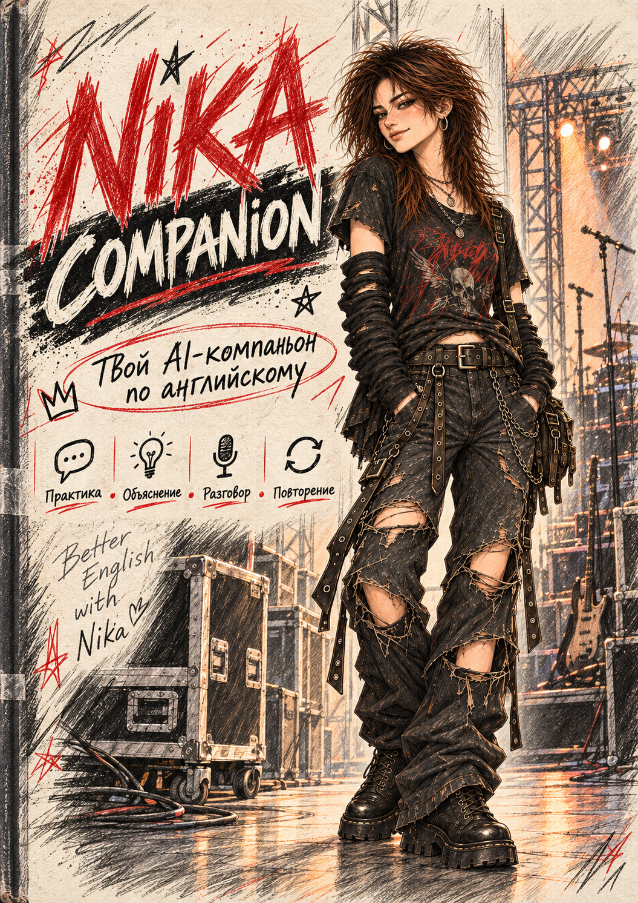
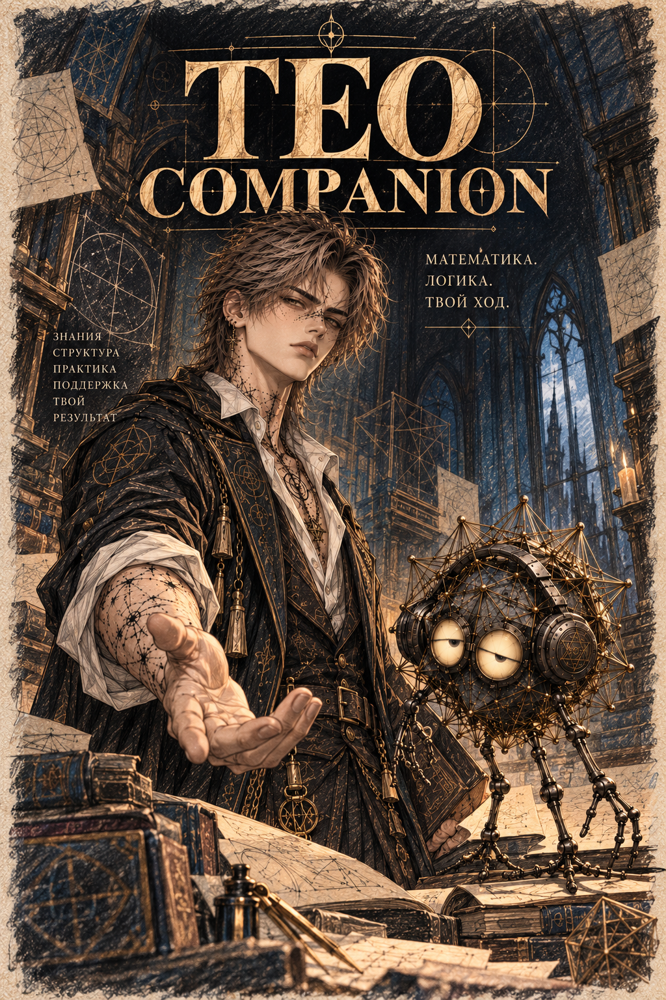

Кого позовём?
Два предмета. Три характера.
Одна цель — понять и научиться самому.

Ника
Английский: смысл, форма и живой разговор.
Открыть издание ↗
Тео и Граф
Математика: устройство, метод и проверка.
Открыть издание ↗Эти издания открываются без интернета. Для самого занятия нужен доступный ИИ-чат.
Внутри — полный промпт, примеры запуска и инструкция сохранения прогресса.